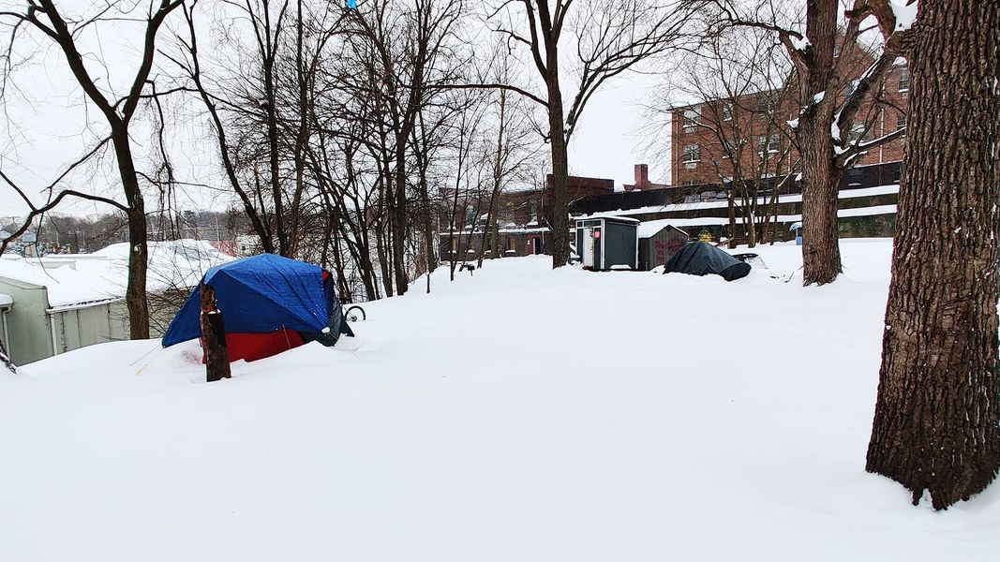

Mobile uploads
Here's a picture of two tents and two tiny houses on the @[112716880296603:274:Houseless Movement] property. I just took this today. This is now the 6th winter I've either sheltered people on my land or supported camps hidden in the woods.
Over the years my feelings about all this has evolved. When I first started my main feeling was that I was disappointed that this was all I was able to provide.
6 years later I understand that the greatest tragedy here is not that humans are living in tents. We've done that for 200,000 years. The great tragedy is the scorn and hatred and judgement these people face by their city, by their politicians and by society as a whole.
There is a small camp that went up in an upscale town outside of Akron. The neighbors are freaking out. They say things like they are worried for their kids. It's a suggestion that all houseless people are crazed pedophiles.
The truth is, it's the houseless people that are at great risk. They are vulnerable in every possible way.
There is nothing wrong with living in a tent or a car or a shed. It's better than having nothing. It's fine. But the homeless hate is so savage and basic. We have a long way to go as a society. Sometimes I think we haven't learned one single thing about our fellow humans.
On this Martin Luther King Jr. Day I plead with you to remember these words:
"I have a dream that my four little children will one day live in a nation where they will not be judged by the color of their skin but by the content of their character."
We still haven't done it for black kids. And we certainly haven't done it for our Houseless neighbors.
Place: Akron, Ohio (41.0732, -81.5179)
Address: Akron, OH 44301